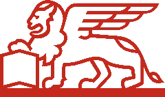

Hedi
Basly
Je conçois des applications Angular robustes, des architectures frontend scalables et des Design Systems qui facilitent le développement au quotidien.
Concevoir des
interfaces
évolutives.
Spécialisé dans l'écosystème Angular, la performance et l'expérience développeur.
Je suis Senior Frontend Engineer, spécialisé dans la conception et le développement d'applications web avec Angular et TypeScript, fort de plus de 7 ans d'expérience sur des projets à grande échelle.
Mon expertise se situe principalement autour de l'architecture frontend, des Design Systems, des composants réutilisables, de la performance et de l'expérience développeur (DX). J'aime construire des solutions simples, maintenables et évolutives à partir de problématiques complexes.
Mon expérience en Java et Spring Boot me permet d'apporter une vision fullstack et de concevoir des architectures cohérentes de bout en bout, tout en conservant une forte dominante frontend.
💡 Je m'intéresse particulièrement aux évolutions récentes d'Angular — notamment les Signals, Signal Forms et la gestion d'état moderne. Je développe régulièrement des projets personnels pour expérimenter ces technologies et partager mes retours d'expérience.
Stack Technique &
Expertises
Core Angular & Front-End
Expertise PrincipaleConception d'applications Web modernes, réactives et hautement performantes.
Agentic UI & GenAI Front-End
Veille & InnovationIntégration d'interfaces dynamiques et agentiques pilotées par l'IA générative.
Architecture & Back-End Eco
Conception & ScalabilitéStructuration de projets modulaires et communication API robuste.
Outillage, Test & Qualité
Pratiques DevGarantie de la qualité logicielle, de l'intégration continue et du cycle de vie.
Missions &
Expériences
Développeur Web Fullstack — Lead Tech
En posteDéveloppeur Fullstack

Développeur Front-end
Projets &
Open Source
DS-Lib
Bibliothèque de composants UI réutilisables, accessibles et hautement personnalisables basée sur Angular et documentée avec Storybook.
- ▸Composants UI modulaires et stylisés avec Tailwind CSS / SCSS
- ▸Intégration Storybook pour la documentation interactive et le workbench UI
- ▸Respect des bonnes pratiques d'accessibilité (A11y / RGAA)
Developer Portfolio
Site portfolio minimaliste, ultra-performant et accessible, conçu pour présenter mon parcours, mon expertise Angular et mes projets open source.
- ▸Architecture Angular moderne basée sur les Signals et le Control Flow natif (@for, @if)
- ▸Design System sur-mesure intégrant un Switch de Thème (Dark/Light) et une grille CSS réactive
- ▸Optimisation SEO, temps de chargement ultra-rapides et respect strict des règles WCAG / RGAA
Signal Form
Exploration et expérimentation autour des Angular Signals appliqués à la gestion de formulaires réactifs et performants.
- ▸Gestion de l'état de formulaire sans dépendances externes lourdes via Angular Signals
- ▸Optimisation de la réactivité fine (fine-grained reactivity)
- ▸Validation dynamique et typage strict avec TypeScript
Avocat Akram
Site vitrine moderne et sur-mesure pour un cabinet d'avocat, axé sur la sobriété visuelle, la performance et l'optimisation SEO.
- ▸Interface moderne, sobre et responsive adaptée au secteur juridique
- ▸Optimisation des performances de chargement et des métadonnées SEO
- ▸Intégration fluide de formulaires de contact et de prises de rendez-vous
Éducation &
Qualifications
Développement Web & Technologies Internet
@École Supérieure Privée d'Ingénierie et de Technologies — ESPRIT • Tunis, Tunisie
Sciences Informatiques
@Faculté des Sciences Mathématiques, Physiques et Naturelles de Tunis • Tunis, Tunisie
Ce qu'ils disent
De notre collaboration
"Hedi est un développeur fullstack et un véritable expert frontend. Une de ses forces est sa capacité à se poser les bonnes questions avant de commencer à coder. Son travail est rigoureux, soigné et qualitatif. Au-delà des compétences techniques, Hedi aime partager ses connaissances avec ses pairs."
Lead Developer
@LCL - Espace Client Connecté
"J'ai particulièrement apprécié sa capacité à faire le lien entre les enjeux fonctionnels et techniques. Hedi sait vulgariser des sujets techniques complexes et les rendre accessibles. J’ai également apprécié son écoute, sa disponibilité et son approche pragmatique."
Business Analyst
@LCL
"C'est un développeur front-end très compétent, rigoureux et impliqué, avec une vraie capacité à comprendre les enjeux du produit et à proposer des solutions pertinentes. La fluidité de nos échanges au quotidien a été très appréciable."
Product Designer UX/UI
@LCL
"C'est un développeur impliqué, dynamique et force de proposition, avec une vraie compréhension des enjeux produit. Son esprit d’équipe, ses connaissances et son approche pragmatique en font un collègue précieux."
Product Owner
@LCL - Refonte Espace Banque
"Hedi est un professionnel engagé. Avec la volonté de mener au mieux ses développements, il communique facilement et est force de proposition. Bienveillant et dynamique, il devient un membre moteur de la scrumteam !"
Product Owner
@Malakoff Humanis
"Grâce à son expertise technique, son professionnalisme et sa bonne humeur, il a joué un rôle déterminant dans la réussite du projet. Ces qualités ont été particulièrement appréciées par l’ensemble de l’équipe !"
Tech Lead
@LCL - Site Transactionnel
Veille, REX &
Thought Leadership
Retour sur NG Baguette Paris
Article publié sur le Blog Tech Néosoft
Rédaction d'un retour d'expérience (RETEX) complet suite à ma participation à la conférence NG Baguette à Paris. Analyse des évolutions majeures de l'écosystème et partage des clés de compréhension avec la communauté.
- ▸Synthèse des nouveautés Angular (Signals, SSR, Control Flow)
- ▸Partage des bonnes pratiques d'architecture auprès des équipes
- ▸Veille active et networking avec la communauté Angular française
Agentic UI & Generative Front-end
Basé sur l'ouvrage de Manfred Steyer
Montée en compétences approfondie sur la conception d'interfaces pilotées par l'IA générative et l'architecture de composants dynamiques exécutés au runtime.
- ▸AG-UI Standard & State Management réactif pour interfaces agentiques
- ▸A2UI & MCP Apps : Génération dynamique d'UI au runtime et transformation de résultats d'outils en widgets interactifs
- ▸Human-in-the-Loop (HITL), Guardrails, sous-agents & workflows de validation
- ▸Stratégies de tests, multimodalité et intégration sécurisée dans Angular
Discutons de
Votre projet
J'aime échanger autour de l'architecture frontend, des pratiques d'ingénierie et des nouvelles approches de l'écosystème Angular, notamment les Signals, les Design Systems et l'IA.
Email professionnel
baslymohamedhedi@gmail.com
in/hedi-basly
(s'ouvre dans un nouvel onglet)GitHub
Hedi Basly
(s'ouvre dans un nouvel onglet)Localisation : Clamart, Paris FR